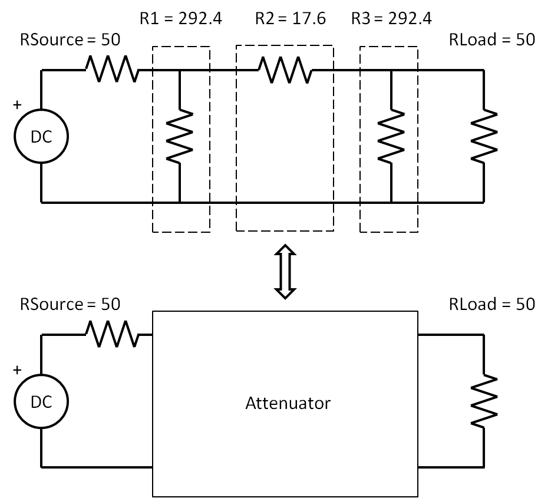

n
Port
A JavaScript Based Microwave Analysis and Learning Tool
code
/
readme
/
an RF repl
/
home
Output Area
// 3dB Attenuator analyzed by nPort at DC var g = nP.global; g.fList = [0]; // if the RF frequency is 0Hz, then it is at DC // define each resistor var R1 = nP.R(292.4); var R2 = nP.R(17.6); var R3 = nP.R(292.4); var Tee = nP.Tee(); var Short = nP.Short(); // hook up the pi attenuator with nodal var attenuator = nP.nodal( [Tee, 2, 1, 3], [R1, 2, 4], [Short, 4], [R2, 3, 5], [Tee, 6, 5, 7], [R3, 6, 8], [Short, 8], ['out', 1, 7] ); // specify the output var s21dB = attenuator.out('s21dB'); // display the output nP.log('Attenuation, in dB, solved by nPort'); nP.log(s21dB); nP.log(nP.bodyWidth());
